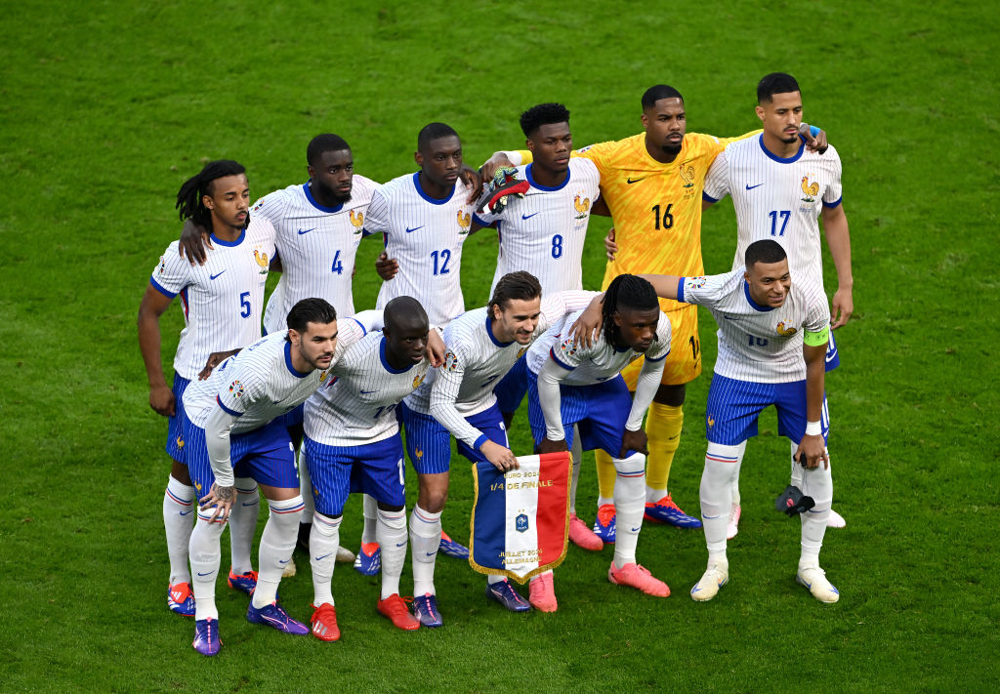

England the birthplace of modern football, with the national team being the joint-oldest in the world, playing the first international match in 1872. The "Three Lions" won the 1966 World Cup on home soil, their only major title, and reached consecutive UEFA European Championship finals in 2020 and 2024. Harry Kane holds the record as England's top goalscorer.
